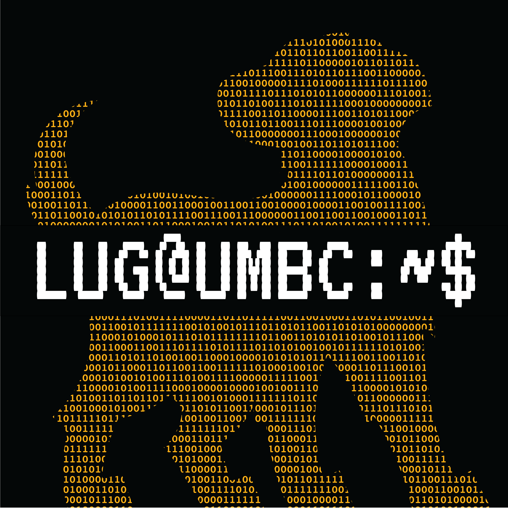

Available Repositories
Welcome to the UMBC LUG Mirror. We provide local mirrors for popular Linux distributions to support faster access for UMBC and the surrounding community.

Welcome to the UMBC LUG Mirror. We provide local mirrors for popular Linux distributions to support faster access for UMBC and the surrounding community.